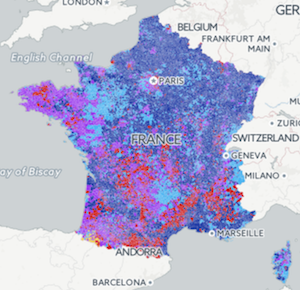
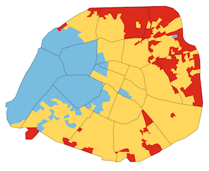

Temps de lecture : 1 minute
Comment créer des visualisations pour comprendre les informations contenues dans les données
Apprendre la manipulation et transformation des données
Démarche:
Composition
Comparaison
Histogrammes
Evolution temporelles
<div class="row imagetiles">
<div class="col-lg-3 col-md-3 col-sm-3 col-xs-6">
<img src=https://i.scdn.co/image/2fd8fa0f7ef2f83691a0fb9628ee369b8e3b688e class="img-responsive">
</div>
<div class="col-lg-3 col-md-3 col-sm-3 col-xs-6">
<img src=https://i.scdn.co/image/2fd8fa0f7ef2f83691a0fb9628ee369b8e3b688e class="img-responsive">
</div>
<div class="col-lg-3 col-md-3 col-sm-3 col-xs-6">
<img src=https://i.scdn.co/image/2fd8fa0f7ef2f83691a0fb9628ee369b8e3b688e class="img-responsive">
</div>
<div class="col-lg-3 col-md-3 col-sm-3 col-xs-6">
<img src=https://i.scdn.co/image/2fd8fa0f7ef2f83691a0fb9628ee369b8e3b688e class="img-responsive">
</div>
</div> 
Copyright © 2017 Site de Kezhan Shi